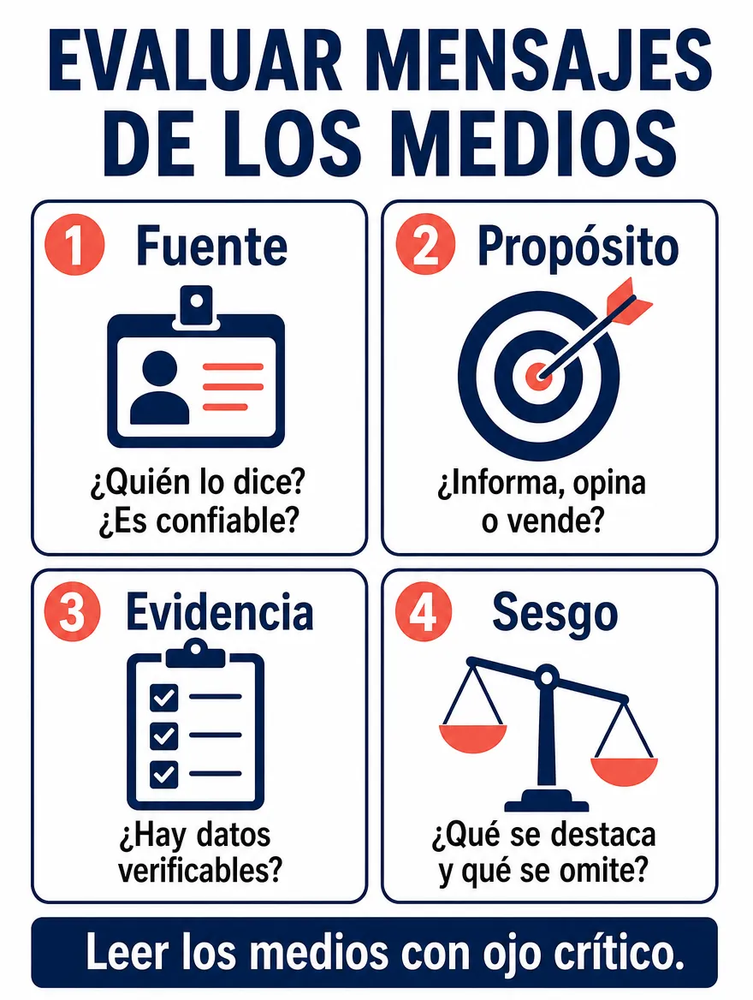

Competencia Lectora · 3.º HC
Repaso 4 · Medios, géneros y lectura crítica
Diez contenidos para leer medios, géneros de opinión y fuentes
12 de noviembre de 2026 · 10 contenidos · 44 preguntas
Antes de practicar · Clase con el docente
Aprende la estrategia
Leer los medios con ojo crítico y llevar una estrategia a la prueba
Objetivo de la clase
Repasar diez contenidos de medios, géneros y lectura crítica (medios masivos, evaluación de mensajes, publicidad, géneros informativos, géneros de opinión, ensayo, recursos del mensaje, fuentes y verificación, ética digital y tipos de pregunta) y aplicarlos en lecturas breves.
¿Cómo comprobaré mi avance? Podré decir quién emite un mensaje, qué busca y con qué lo respalda, y mostrar la parte del texto que apoya cada respuesta.
Instrucciones de trabajo · Antes de comenzar
Necesitas esta guía y tu cuaderno. Abre los cuatro bloques de esta pantalla en orden. Trabaja el ejemplo con el docente; después intenta la comprobación antes de desplegar su respuesta.
Luego ingresa con tu RUT. La guía tiene diez partes: en cada una primero repasas el contenido con su infografía y después lo aplicas en una lectura con cuatro o cinco preguntas. Tiempo sugerido: 90 minutos. En las preguntas 4, 8, 12, 17, 22, 26, 30, 35, 40 y 44 escribe también una respuesta breve.
Las consignas de este repaso inicial se responden en tu cuaderno: no tienen puntaje ni se guardan en línea. Las respuestas de la guía se guardan solas. Al entregar, espera la confirmación de la plataforma; los resultados dependen de la publicación del docente.
Activa lo que sabes
Piensa en el último mensaje que te reenviaron o en el último aviso que viste en tu teléfono. ¿Quién lo escribió, qué quería que hicieras y cómo supiste si era confiable? Esas tres preguntas son el punto de partida de hoy.
- 1 · Comprende
- 2 · Aplica
- 3 · Observa
- 4 · Comprueba
1. Comprende los conceptos
Cuatro preguntas para evaluar un mensaje

Fuente es quién lo dice y si es confiable. Propósito es si el mensaje informa, opina o vende. Evidencia son los datos que se pueden verificar. Sesgo es lo que se destaca y lo que se omite. Con estas cuatro preguntas puedes evaluar casi cualquier mensaje.
Medios masivos
Llegan a mucha gente a la vez (prensa, radio, televisión, internet). Un mismo hecho cambia según el medio y el formato que lo cuenta.
Publicidad
Busca que compres o uses algo; la propaganda busca que adoptes una idea. Ambas persuaden, pero con fines distintos.
Géneros informativos
El reportaje investiga un tema con datos y fuentes, la crónica relata hechos en orden temporal con la mirada personal de quien los cuenta y la entrevista da la palabra a una persona con preguntas y respuestas.
Géneros de opinión
El editorial expresa la postura del diario, la columna la de su autor, y la crítica valora una obra con razones. Todos defienden una postura fundamentada.
Ensayo
Es pensar por escrito: una tesis personal que se defiende con libertad, con argumentos y a veces con experiencias.
Recursos del mensaje
Los recursos lingüísticos son las palabras. Los no lingüísticos son las imágenes, los colores y los sonidos. En quien habla, los gestos y la mirada son no verbales, y el tono, el volumen y las pausas son paraverbales.
Fuentes y verificación
Una fuente confiable da autor, fecha y respaldo. Para verificar, contrasta con más de una fuente. Si dudas, no compartas.
Ética digital
Detrás de cada pantalla hay una persona. Lo que publicas queda registrado, puede reenviarse y tiene efectos reales.
Tipos de pregunta
Reconocer qué te pide la pregunta (obtener información, interpretar o reflexionar y evaluar) es el primer paso para responderla y para descartar alternativas.
2. Aplica la estrategia paso a paso
- Repasa el contenido
Mira la infografía de la parte y lee «Lo esencial». Di con tus palabras qué significa cada concepto.
- Lee el texto completo
Antes de mirar las preguntas, pregúntate quién lo dice, qué busca y con qué lo respalda.
- Reconoce qué pide la pregunta
¿Pide encontrar un dato escrito, inferir algo que el texto no dice o juzgar si el mensaje es confiable, claro o justo?
- Vuelve al texto y decide
Ubica la parte que responde y compara las alternativas con ella. Descarta las que afirman algo que el texto no sostiene.
Antes del modelo: explica con tus palabras la diferencia entre un mensaje que informa y uno que vende.
3. Sigue un ejemplo razonado
Ejemplo de enseñanza, no evaluado
«Cuatro de cada cinco jóvenes usan Zumo Pro para estudiar mejor. Compruébalo tú mismo: este fin de semana, 20 % de descuento en todas las botellas».
Pregunta del modelo
¿Qué tan confiable es este mensaje y qué busca?
Pienso en voz alta
Primero miro la fuente: lo dice la marca que vende el zumo, así que tiene interés en que compre. El propósito se nota en el final: «20 % de descuento» pide una compra. En cuanto a la evidencia, la cifra «cuatro de cada cinco» no dice quién preguntó, a cuántos ni cuándo. Sobre el sesgo, solo muestra lo favorable.
Conclusión justificada
Es publicidad: busca que compre. Su cifra no se puede verificar, así que no basta para creerle. Para decidir necesitaría una fuente independiente.
4. Comprueba y prepara la práctica
Ahora explica tú · En tu cuaderno
Elige un mensaje que recibiste esta semana (un reenvío, un aviso o una publicación). Anota quién lo emite, qué busca y qué evidencia entrega.
Revisa después de responder
Una buena respuesta nombra a quien lo emite, dice si informa, opina o vende, y señala un dato verificable o reconoce que no lo hay. Si tu mensaje no daba ninguna fuente ni dato, esa es la señal para no compartirlo hasta contrastarlo.
Comprueba antes de avanzar
¿Puedes decir quién emite el mensaje y qué busca? ¿Puedes señalar la frase que te lo mostró? Si falta alguno, vuelve al bloque 1 de esta pantalla.
Aplica y transfiere
En la práctica, antes de responder cada pregunta, di qué contenido pide: medio, publicidad, género informativo o de opinión, ensayo, recursos, fuentes o ética digital. En el cierre de la guía armarás tu estrategia para el día de la prueba.
Guía 30 · 12 de noviembre
Repaso 4 · Medios, géneros y lectura crítica
10 contenidos · 44 preguntas · Tiempo sugerido: 90 minutos · En cada parte, primero repasa la infografía y después aplica el contenido en la lectura
Revisión y entrega
Puedes entregar con preguntas pendientes.
Entrega confirmada
Tus respuestas quedaron registradas. Los resultados estarán disponibles cuando el profesor los publique.
Volver al portal PAES